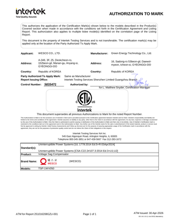

UPS
비상 부하
장시간 백업이 필요한 정보·제어 부하
CIM·MES 서버 / 클린룸 제어 / 비상 인프라
0.1초 전압 저하도 생산을 멈춥니다. WESCO TSP가 국내 주요 대기업·글로벌 제조사 라인을 보호합니다.
25년간 한 가지에만 집중해 온 순간정전 보호 솔루션 전문 기업


전력 문제가 아니라 비즈니스 연속성의 문제
자연재해 + 전력계통 고장
모든 설비가 동일한 보호를 필요로 하지 않습니다 — 부하별 조합이 가장 합리적입니다.
CIM·MES 서버 / 클린룸 제어 / 비상 인프라
STEPPER · ETCH · CVD · CMP / LCD·OLED 코팅 / 도장·용접 로봇
일반 조명·HVAC / 비공정 영역 모터 / 운반·물류
평소엔 전원 그대로 — 전력 이상 발생 즉시 2 ms 이내에 보상
평상시 — 계통 전원이 안정적으로 공급되고 생산라인이 정상 운전됩니다. WESCO TSP는 전력을 그대로 통과시키며 뒤에서 조용히 대기합니다.
장수명 · 무점검 · 고속 응답
UPS는 3년마다 배터리 교체 · TSP는 10년+ 교체 불필요.
냉각팬 없음 → 화재·고장 원인 원천 차단. 저발열 설계.
평상시 대기 전력 98% · 사고 시 2 ms 오프라인 보상.
단상 0.5 kVA ~ 삼상 2,400 kVA · 국내 유일 풀 라인업


핵심 설비만 선택적으로 보호
설비마다 개별 설치 · 필요한 곳만 보호 · 단계적 증설 가능
핵심 설비만 우선 보호 · 단계적 투자 필요 시
생산라인 전체를 한 번에 보호
메인 전기실 1대 설치 · 라인 전체 동시 보호 · 유지관리 단순
대규모 라인 통합 보호 · 전기실 중심 운영
사무실 PC에서 사고 시각·전압강하·ms 지속시간·보상 결과 즉시 확인 · 자동 리포트

전체 TSP 현황 한 화면에 — Total · Comm Err · Event · Fault
입력 / 출력 전압·주파수·전력·역률 — 이상 발생 즉시 색상 변화
발생 시각 · Tool ID · 지속 시간 · 전압 · 보상 결과 자동 저장
SEMI F47 곡선 위에 이벤트 표시 → PDF Export
RS485 → Ethernet → 통합 Server. 고객 SCADA / DCS 연동
WESCO가 정기 제출하는 실제 보고서 양식
| 측정 기간 | 12 개월 (연속 모니터링) |
| 총 이벤트 | 21 건 |
| 1초 이내 비율 | 100 % |
| 최저 전압강하 | 90% Drop |
| 가장 빈번한 구간 | 50 ~ 100 ms |
| TSP® 보상 성공률 | 100 % |
측정 기간 발생한 모든 이벤트(21건)는 1초 이내이며, TSP®가 100% 보상해 라인 정지 0건. Top-Tier 제조사 표준(100% Drop · 1초 보상) 충족.
권장: 향후 12개월 추가 모니터링 · 정기 리포트 제출로 생산 수율 안정화.
전력 안정성이 생산성을 좌우하는 모든 현장
0.01초 전압 변동 = 정밀장비 정지 · 웨이퍼 손실 수십억 원.
LCD·OLED 라인 1초 정지 = 수억 단위 패널 폐기.
도장·용접·로봇 라인 동시 정지 = 차종 전체 재작업.
전극 코팅·롤투롤 정지 = 배터리 셀 전량 폐기 · 극판 균일도 파괴.
0.1초 정전 = 서버 다운 · SLA 위반. 무중단은 계약 조건.
전기실·HVAC·조명 통합 보호로 시설 가동률 유지.
누적 10,000대 + · 글로벌 Top-Tier 검증
비전옥스 신규 Fab에 700대 TSP 납품·가동 · 성능 검증 후 추가 프로젝트 연속 수주.
에스컬레이터·무빙워크 24h 무중단
555m 초고층 에스컬레이터 보호
놀이기구 안전 설비 보호
놀이기구·안전 시스템 무정전 운영
국내 5 · 해외 7 · 16개국 지원 — 현지 즉시 대응
국제 안전·EMC·반도체 규격 인증 5종 보유



단선도 · 부하 사양 · 보호 범위만 보내주시면 24시간 내 1차 회신.